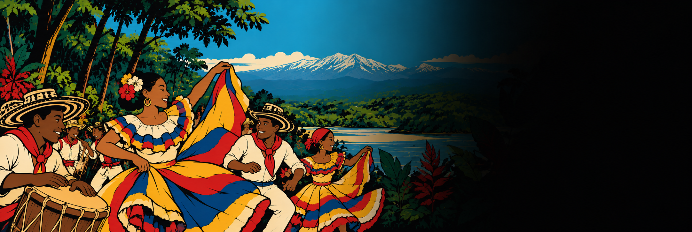
Un recorrido por los imaginarios con los que se cuenta la cumbia —el origen único, la madre de ritmos, la mezcla de tres raíces— y por su lugar en el Carnaval de Barranquilla.
A journey through the imaginaries used to tell the story of cumbia —the single origin, the mother of rhythms, the blend of three roots— and its place in the Barranquilla Carnival.
Ein Streifzug durch die Vorstellungen, mit denen die Geschichte der Cumbia erzählt wird – der eine Ursprung, die Mutter der Rhythmen, die Mischung dreier Wurzeln – und durch ihren Platz im Karneval von Barranquilla.
Ruta de la cumbia — basado en la tesis de maestría «Between millo and picó» (Universität Würzburg, 2024)The Cumbia Route — based on the master’s thesis “Between millo and picó” (Universität Würzburg, 2024)Die Route der Cumbia — nach der Masterarbeit „Between millo and picó“ (Universität Würzburg, 2024)
La cumbia es reconocida como una de las prácticas musicales más importantes de América Latina. Se le atribuye un origen en el Caribe colombiano, desde donde se extendió por el continente y se transformó y adaptó en cada país. Pero ¿qué es exactamente la cumbia? Hasta bien entrado el siglo XX, casi cualquier música de la Costa podía llamarse cumbia, porro o simplemente «aires costeños», y hasta 1960 no estaba claro si se trataba de un género, de un patrón rítmico, de una danza o de todo a la vez.
Cumbia is recognised as one of the most important musical practices in Latin America. It is said to have originated in the Colombian Caribbean, from where it spread across the continent and was transformed and adapted in each country. But what exactly is cumbia? Until well into the 20th century, almost any music from the Coast could be called cumbia, porro or simply “aires costeños”, and until 1960 it was not clear whether it was a genre, a rhythmic pattern, a dance or all of these at once.
Die Cumbia gilt als eine der wichtigsten musikalischen Praktiken Lateinamerikas. Ihr Ursprung wird in der kolumbianischen Karibik verortet, von wo aus sie sich über den Kontinent verbreitete und in jedem Land verwandelte und anpasste. Doch was genau ist Cumbia? Bis weit ins 20. Jahrhundert konnte fast jede Musik der Küste Cumbia, Porro oder einfach „Aires costeños“ heißen, und bis 1960 war unklar, ob es sich um ein Genre, ein rhythmisches Muster, einen Tanz oder alles zugleich handelte.
Por eso el musicólogo Juan Sebastián Ochoa propone entenderla como un concepto: una construcción social que no es una entidad por descubrir, sino una creación humana en permanente transformación y negociación. Este especial sigue esa pista. Recorre los tres imaginarios con los que suele contarse la historia de la cumbia y baja luego a la calle, al Carnaval de Barranquilla, donde una comparsa la baila cada año.
That is why the musicologist Juan Sebastián Ochoa proposes understanding it as a concept: a social construction that is not an entity to be discovered, but a human creation in permanent transformation and negotiation. This special follows that lead. It travels through the three imaginaries usually used to tell the story of cumbia and then goes down to the street, to the Barranquilla Carnival, where a comparsa dances it every year.
Deshalb schlägt der Musikwissenschaftler Juan Sebastián Ochoa vor, sie als Konzept zu verstehen: als soziale Konstruktion, die keine zu entdeckende Wesenheit ist, sondern eine menschliche Schöpfung in ständiger Verwandlung und Aushandlung. Dieses Spezial folgt dieser Spur. Es geht die drei Vorstellungen durch, mit denen die Geschichte der Cumbia meist erzählt wird, und steigt dann auf die Straße hinab, in den Karneval von Barranquilla, wo eine Comparsa sie jedes Jahr tanzt.
La tradición sitúa el origen de la cumbia en el Caribe colombiano, en las tierras bajas a orillas del río Magdalena. Se suele señalar en especial la depresión momposina, una zona de ciénagas y caños alrededor de Mompox y El Banco.
Tradition places the origin of cumbia in the Colombian Caribbean, in the lowlands along the Magdalena River. The Mompox Depression, an area of swamps and channels around Mompox and El Banco, is often singled out.
Die Überlieferung verortet den Ursprung der Cumbia in der kolumbianischen Karibik, im Tiefland am Río Magdalena. Besonders genannt wird die Depresión Momposina, ein Gebiet aus Sümpfen und Kanälen rund um Mompox und El Banco.
Desde allí la cumbia habría llegado a los Montes de María, a las sabanas y a ciudades portuarias como Cartagena y Barranquilla, cuyo carnaval la convirtió en uno de sus emblemas.
From there cumbia is said to have reached the Montes de María, the savannahs and port cities such as Cartagena and Barranquilla, whose carnival made it one of its emblems.
Von dort soll die Cumbia in die Montes de María, die Savannen und Hafenstädte wie Cartagena und Barranquilla gelangt sein, deren Karneval sie zu einem seiner Wahrzeichen machte.
El Plan Nacional de Música para la Convivencia del Ministerio de Cultura organiza las músicas tradicionales del país en once ejes, según el territorio donde más arraigo tienen. La cumbia pertenece al eje del Caribe Occidental, el de los pitos y tambores. Haga clic en cada eje.
The Ministry of Culture’s National Music Plan for Coexistence organises the country’s traditional musics into eleven axes, according to the territory where they are most rooted. Cumbia belongs to the Western Caribbean axis, that of pipes and drums. Click each axis.
Der Nationale Musikplan für das Zusammenleben des Kulturministeriums ordnet die traditionellen Musiken des Landes in elf Achsen, je nach dem Gebiet, in dem sie am stärksten verwurzelt sind. Die Cumbia gehört zur Achse der Westkaribik, der Achse der Pfeifen und Trommeln. Klicken Sie auf jede Achse.
Aquí se ubica la cumbiaThis is where cumbia belongsHier verortet sich die Cumbia
«Cumbia was born in the funeral ceremonies that the Chimila Indians held in the land of Pocabuy when one of their chiefs died.»
«La cumbia nació en las ceremonias fúnebres que los indios chimilas celebraban en el país de Pocabuy cuando moría uno de sus jerarcas.»„Die Cumbia entstand bei den Totenfeiern, die die Chimila-Indigenen im Land Pocabuy abhielten, wenn einer ihrer Würdenträger starb.“
José BarrosCompositor de «La piragua»Composer of “La piragua”Komponist von „La piragua“Tradición oralOral traditionMündliche ÜberlieferungPocabuy: El Banco, Mompox, Tamalameque y alrededoresPocabuy: El Banco, Mompox, Tamalameque and surroundingsPocabuy: El Banco, Mompox, Tamalameque und UmgebungEl primer imaginario sostiene que la cumbia tiene una única raíz y que, desde ella, ha evolucionado en línea recta. Esa evolución se cuenta sobre todo a través de los instrumentos: empieza antes de 1900 con los conjuntos de millo y de gaitas y llega hasta hoy con las bandas de viento y las big bands.
The first imaginary holds that cumbia has a single root and that, from it, it has evolved in a straight line. This evolution is told above all through the instruments: it begins before 1900 with the millo and gaita ensembles and reaches the present with wind bands and big bands.
Die erste Vorstellung besagt, dass die Cumbia eine einzige Wurzel hat und sich von ihr aus geradlinig entwickelt hat. Diese Entwicklung wird vor allem über die Instrumente erzählt: Sie beginnt vor 1900 mit den Millo- und Gaita-Ensembles und reicht bis zu den Blaskapellen und Big Bands von heute.
Ochoa le hace tres críticas. La primera: se da por hecho que cada formato heredó la cumbia del anterior, sin preguntarse cuánto le debe a otros géneros. La segunda: el afán por un formato original exotiza las flautas indígenas como expresión pura de un pasado mítico y las convierte en emblema de una comunidad imaginada, en el sentido de Benedict Anderson: primero el Caribe colombiano y después la nación.
Ochoa makes three criticisms. First, it is taken for granted that each format inherited cumbia from the previous one, without asking how much it owes to other genres. Second, the eagerness for an original format exoticises the Indigenous flutes as the pure expression of a mythical past and turns them into the emblem of an imagined community, in Benedict Anderson’s sense: first the Colombian Caribbean, then the nation.
Ochoa formuliert drei Kritikpunkte. Erstens wird vorausgesetzt, dass jede Besetzung die Cumbia von der vorherigen geerbt hat, ohne zu fragen, wie viel sie anderen Genres verdankt. Zweitens exotisiert die Suche nach einer Urbesetzung die indigenen Flöten als reinen Ausdruck einer mythischen Vergangenheit und macht sie zum Emblem einer vorgestellten Gemeinschaft im Sinne Benedict Andersons: zuerst der kolumbianischen Karibik, dann der Nation.
La tercera apunta a la idea misma de evolución. Pensar que una banda de viento está «más evolucionada» que un conjunto tradicional, o que una big band es más avanzada que una banda, es problemático, sobre todo si el formato «primordial» lo forman flautas indígenas y los siguientes, instrumentos de la organología occidental.
The third targets the very idea of evolution. Thinking that a wind band is “more evolved” than a traditional ensemble, or that a big band is more advanced than a wind band, is problematic, especially when the “primordial” format is made up of Indigenous flutes and the later ones of instruments from Western organology.
Der dritte zielt auf die Idee der Evolution selbst. Zu denken, eine Blaskapelle sei „weiter entwickelt“ als ein traditionelles Ensemble oder eine Big Band fortschrittlicher als eine Blaskapelle, ist problematisch – zumal die „ursprüngliche“ Besetzung aus indigenen Flöten besteht und die späteren aus Instrumenten der westlichen Organologie.
Entre los músicos se reconoce al conjunto de caña de millo como el formato original de la cumbia en Colombia: una flauta de caña, tambores y maracas. A su lado están las gaitas, flautas de origen indígena hechas de madera, cera y una boquilla de pluma de pato, aunque hoy también se fabrican en plástico.
Among musicians, the caña de millo ensemble is recognised as the original format of cumbia in Colombia: a cane flute, drums and maracas. Alongside it are the gaitas, flutes of Indigenous origin made of wood, wax and a mouthpiece of duck feather, although today they are also made of plastic.
Unter Musikern gilt das Caña-de-millo-Ensemble als ursprüngliche Besetzung der Cumbia in Kolumbien: eine Rohrflöte, Trommeln und Maracas. Daneben stehen die Gaitas, Flöten indigener Herkunft aus Holz, Wachs und einem Mundstück aus Entenfeder, heute auch aus Kunststoff.
La gaita hembra lleva la melodía y tiene cinco orificios; la gaita macho, de dos, acompaña a su contraparte. Durante mucho tiempo estos instrumentos, percibidos como «femeninos», fueron tocados casi solo por hombres. Eso ha cambiado: cada vez es más común ver a mujeres tocando gaitas y flautas de millo, y Mayté Montero es hoy una de las gaiteras más importantes.
The female gaita carries the melody and has five holes; the male gaita, with two, accompanies its counterpart. For a long time these instruments, perceived as “feminine”, were played almost exclusively by men. That has changed: it is increasingly common to see women playing gaitas and millo flutes, and Mayté Montero is today one of the most important gaita players.
Die weibliche Gaita trägt die Melodie und hat fünf Löcher; die männliche Gaita mit zwei Löchern begleitet ihr Gegenstück. Lange Zeit wurden diese als „weiblich“ wahrgenommenen Instrumente fast nur von Männern gespielt. Das hat sich geändert: Immer häufiger spielen Frauen Gaitas und Millo-Flöten, und Mayté Montero ist heute eine der bedeutendsten Gaitaspielerinnen.
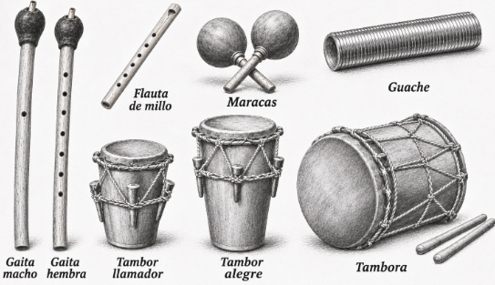
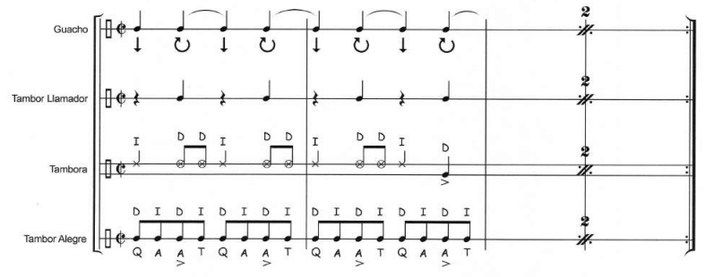
Cuatro grabaciones, una por etapa, para oír cómo cambia el formato de la cumbia según el relato lineal. Haga clic en cada etapa.Four recordings, one per stage, to hear how the cumbia format changes according to the linear account. Click each stage.Vier Aufnahmen, eine pro Etappe, um zu hören, wie sich die Besetzung der Cumbia im linearen Narrativ wandelt. Klicken Sie auf jede Etappe.
Esquema del imaginario de evolución lineal, según J. S. Ochoa (2019). La flecha también forma parte del mito.Diagram of the imaginary of linear evolution, after J. S. Ochoa (2019). The arrow is part of the myth too.Schema der Vorstellung linearer Entwicklung nach J. S. Ochoa (2019). Auch der Pfeil gehört zum Mythos.
Gaitas hembra y macho, tambores y maracas: el formato que el imaginario sitúa en el origen, el punto de partida de la supuesta línea evolutiva que llega hasta las bandas de viento y las big bands.
Female and male gaitas, drums and maracas: the format the imaginary places at the origin, the starting point of the supposed evolutionary line that leads to wind bands and big bands.
Weibliche und männliche Gaitas, Trommeln und Maracas: die Besetzung, die die Vorstellung an den Ursprung setzt – der Ausgangspunkt der vermeintlichen Entwicklungslinie, die zu Blaskapellen und Big Bands führt.
Clarinetes, trompetas, bombardinos, bombo y redoblante: las bandas de viento de las sabanas de Córdoba y Sucre llevaron estos ritmos a las fiestas de pueblo con instrumentos de origen militar europeo. De ese mundo viene «La pollera colorá», con música del trompetista Juan Madera y letra de Wilson Choperena. Aquí la toca una papayera, la versión pequeña de las bandas pelayeras: unas pocas trompetas, bombo, redoblante y platillos. La melodía que antes llevaba la gaita pasa a los metales.
Clarinets, trumpets, euphoniums, bass drum and snare: the wind bands of the savannahs of Córdoba and Sucre took these rhythms to village festivals with instruments of European military origin. From that world comes “La pollera colorá”, with music by trumpeter Juan Madera and lyrics by Wilson Choperena. Here it is played by a papayera, the small version of the pelayera bands: a few trumpets, bass drum, snare and cymbals. The melody once carried by the gaita passes to the brass.
Klarinetten, Trompeten, Euphonien, große Trommel und Snare: Die Blaskapellen der Savannen von Córdoba und Sucre brachten diese Rhythmen mit Instrumenten europäisch-militärischer Herkunft zu den Dorffesten. Aus dieser Welt stammt „La pollera colorá“, mit Musik des Trompeters Juan Madera und Text von Wilson Choperena. Hier spielt sie eine Papayera, die kleine Form der Pelayera-Kapellen: wenige Trompeten, große Trommel, Snare und Becken. Die Melodie, die einst die Gaita trug, geht an die Blechbläser über.
Con su orquesta, Lucho Bermúdez llevó la música del Caribe colombiano a los clubes de Bogotá y Medellín con un sonido de big band cercano al jazz. «Danza negra», una cumbia que cantó Matilde Díaz, nombra en su letra las gaitas y los tambores: el formato de origen, ahora tocado por clarinetes, saxofones y trompetas.
With his orchestra, Lucho Bermúdez took the music of the Colombian Caribbean to the clubs of Bogotá and Medellín with a jazz-inflected big band sound. “Danza negra”, a cumbia sung by Matilde Díaz, names the gaitas and drums in its lyrics: the original format, now played by clarinets, saxophones and trumpets.
Mit seinem Orchester brachte Lucho Bermúdez die Musik der kolumbianischen Karibik mit einem jazznahen Big-Band-Sound in die Clubs von Bogotá und Medellín. „Danza negra“, eine von Matilde Díaz gesungene Cumbia, nennt in ihrem Text die Gaitas und Trommeln: die ursprüngliche Besetzung, nun von Klarinetten, Saxofonen und Trompeten gespielt.
Desde Bogotá, La Mojarra Eléctrica junta los tambores y los cantos del Caribe y el Pacífico colombianos con guitarra y bajo eléctricos, funk y rock. En «El hueco», la base tradicional convive con un sonido amplificado: la cumbia de siempre, ahora enchufada.
From Bogotá, La Mojarra Eléctrica brings together the drums and songs of the Colombian Caribbean and Pacific with electric guitar and bass, funk and rock. In “El hueco”, the traditional groove lives alongside an amplified sound: age-old cumbia, now plugged in.
Aus Bogotá verbindet La Mojarra Eléctrica die Trommeln und Gesänge der kolumbianischen Karibik und Pazifikküste mit E-Gitarre und E-Bass, Funk und Rock. In „El hueco“ trifft der traditionelle Groove auf einen verstärkten Klang: die Cumbia von jeher, nun unter Strom.
Hoy la cumbia se vuelve material de laboratorio: productores y músicos la desarman, la samplean y la cruzan con la electrónica. Ya no se trata de sumar instrumentos a un formato, sino de reinventar su sonido desde la computadora.
Today cumbia becomes laboratory material: producers and musicians take it apart, sample it and cross it with electronics. It is no longer about adding instruments to a format, but about reinventing its sound from the computer.
Heute wird die Cumbia zum Labormaterial: Produzenten und Musiker zerlegen sie, sampeln sie und kreuzen sie mit Elektronik. Es geht nicht mehr darum, einer Besetzung Instrumente hinzuzufügen, sondern ihren Klang am Computer neu zu erfinden.
«Cumbia, as it grew stronger, became a mother rhythm from which the different musics of the coast later emerged.»
«La cumbia, al fortalecerse, se convirtió en un ritmo madre de donde surgieron más tarde las distintas musicales de las costa.»„Als die Cumbia erstarkte, wurde sie zu einem Mutterrhythmus, aus dem später die verschiedenen Musikformen der Küste hervorgingen.“
Plinio Apuleyo Mendoza & Esther ForeroPlinio: escritor, periodista y diplomático · Esther: compositora, cantante y conductora radialPlinio: writer, journalist and diplomat · Esther: songwriter, singer and radio hostPlinio: Schriftsteller, Journalist und Diplomat · Esther: Komponistin, Sängerin und RadiomoderatorinLibretistas de «40 años de música costeña»Scriptwriters of “40 años de música costeña”Textautoren von „40 años de música costeña“ Álbum doble en vinilo, 1967Double vinyl album, 1967Doppelalbum auf Vinyl, 1967El segundo imaginario hace de la cumbia la base de todos los demás géneros del Caribe colombiano. Ya en 1967 el audiodocumental 40 años de música costeña lo afirmaba: al fortalecerse, la cumbia se convirtió en un ritmo madre del que nacieron el bullerengue, el porro, la puya, el merengue, el fandango y otros ritmos.
The second imaginary makes cumbia the basis of all the other genres of the Colombian Caribbean. As early as 1967, the audio documentary 40 años de música costeña stated it: as it grew stronger, cumbia became a mother rhythm from which bullerengue, porro, puya, merengue, fandango and other rhythms were born.
Die zweite Vorstellung macht die Cumbia zur Grundlage aller anderen Genres der kolumbianischen Karibik. Schon 1967 hieß es im Audio-Dokumentarfilm 40 años de música costeña: Indem sie erstarkte, wurde die Cumbia zu einem Mutterrhythmus, aus dem Bullerengue, Porro, Puya, Merengue, Fandango und andere Rhythmen hervorgingen.
Estos géneros comparten bases rítmicas e instrumentos, pero hoy es imposible saber si todos nacieron de la cumbia. Federico Ochoa recuerda que hasta mediados del siglo XX era el porro, y no la cumbia, el que dominaba los salones y las grabaciones de orquestas como la de Lucho Bermúdez. No es descabellado pensar que la cumbia viniera del porro, o que cada género tuviera su propio desarrollo en su territorio.
These genres share rhythmic bases and instruments, but today it is impossible to know whether they were all born from cumbia. Federico Ochoa recalls that until the mid-20th century it was porro, not cumbia, that dominated the dance halls and the recordings of orchestras such as Lucho Bermúdez’s. It is not far-fetched to think that cumbia came from porro, or that each genre had its own development in its own territory.
Diese Genres teilen rhythmische Grundlagen und Instrumente, doch heute lässt sich nicht mehr klären, ob sie alle aus der Cumbia hervorgingen. Federico Ochoa erinnert daran, dass bis Mitte des 20. Jahrhunderts der Porro und nicht die Cumbia die Tanzsäle und die Aufnahmen von Orchestern wie dem von Lucho Bermúdez beherrschte. Es ist nicht abwegig, dass die Cumbia aus dem Porro stammt oder dass jedes Genre sich in seinem eigenen Gebiet entwickelte.
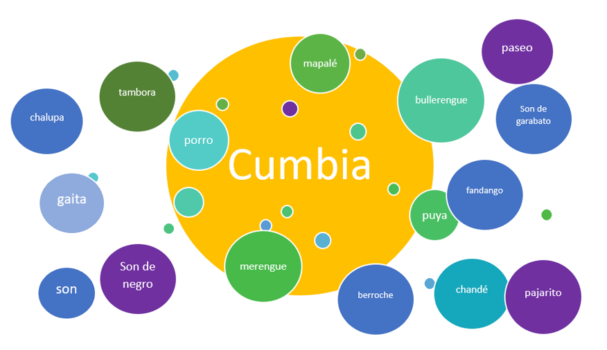
Si la cumbia fuera de verdad la madre de los ritmos del Caribe colombiano, sus «hijos» deberían llevar su huella. Aquí puede comparar los patrones rítmicos de los géneros que suelen presentarse como descendientes suyos, instrumento por instrumento, y juzgar por sí mismo qué comparten y qué no.
If cumbia really were the mother of the rhythms of the Colombian Caribbean, its “children” should bear its mark. Here you can compare the rhythmic patterns of the genres usually presented as its descendants, instrument by instrument, and judge for yourself what they share and what they do not.
Wäre die Cumbia wirklich die Mutter der Rhythmen der kolumbianischen Karibik, müssten ihre „Kinder“ ihre Spuren tragen. Hier können Sie die rhythmischen Muster der Genres vergleichen, die gewöhnlich als ihre Nachfahren gelten – Instrument für Instrument – und selbst beurteilen, was sie teilen und was nicht.
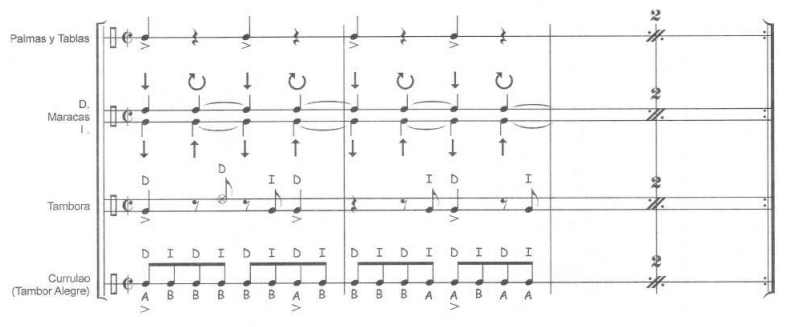
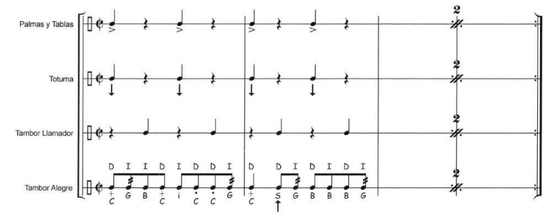
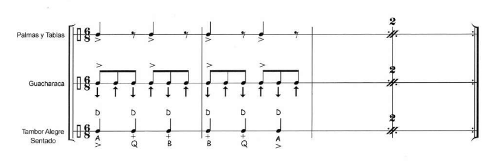
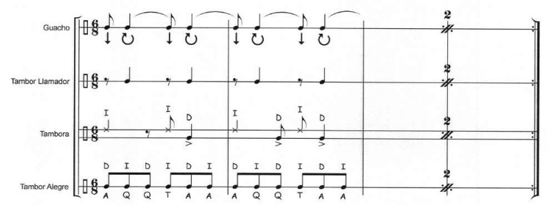
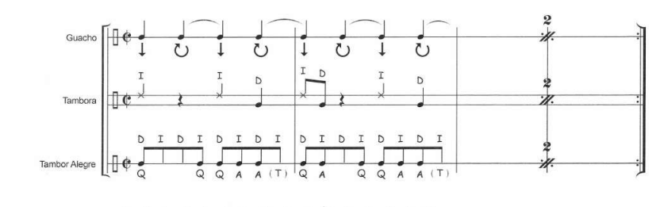
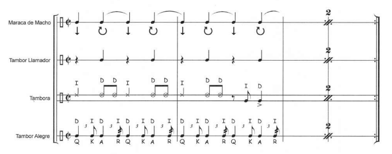
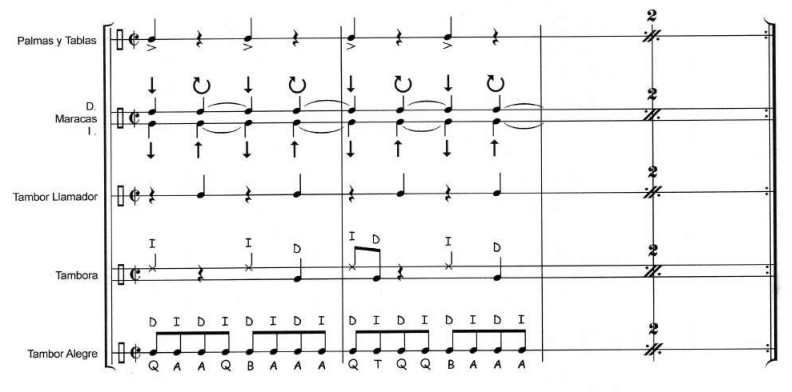
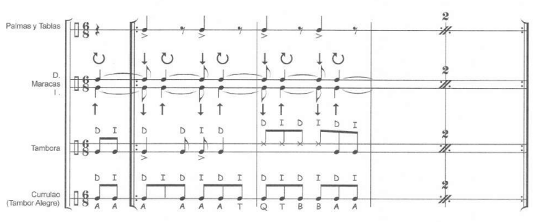
El chandé es la base. Se dice que el son de garabato, el ritmo de la danza del Garabato, es una estilización suya: cambie entre los dos para comparar.Chandé is the base. Son de garabato, the rhythm of the Garabato dance, is said to be a stylisation of it: switch between the two to compare.Der Chandé ist die Grundlage. Der Son de garabato, der Rhythmus des Garabato-Tanzes, gilt als seine Stilisierung: Wechseln Sie zwischen beiden, um zu vergleichen.
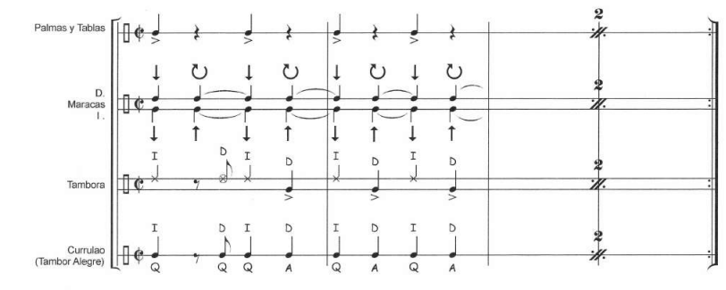
Estilización del chandé. El son de garabato conserva su base y la lleva a la danza del Garabato en el Carnaval de Barranquilla, donde suena, por ejemplo, «Te olvidé». Observe qué se mantiene y qué cambia.A stylisation of chandé. Son de garabato keeps its base and carries it into the Garabato dance of the Barranquilla Carnival, where, for instance, “Te olvidé” is played. See what stays and what changes.Eine Stilisierung des Chandé. Der Son de garabato bewahrt dessen Grundlage und trägt sie in den Garabato-Tanz des Karnevals von Barranquilla, wo etwa „Te olvidé“ erklingt. Achten Sie darauf, was bleibt und was sich ändert.
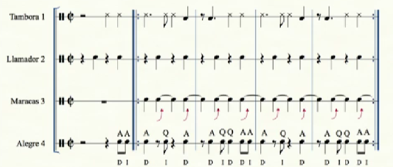
La cumbia colombiana también se presenta como madre de todas las cumbias que surgieron de México a Argentina. Para entender esa multiplicidad sirve la noción de glocalización: la adopción y adaptación de elementos culturales entre contextos que la globalización mantiene conectados.
Colombian cumbia is also presented as the mother of all the cumbias that emerged from Mexico to Argentina. To understand that multiplicity, the notion of glocalisation is useful: the adoption and adaptation of cultural elements between contexts kept connected by globalisation.
Die kolumbianische Cumbia wird auch als Mutter aller Cumbias dargestellt, die von Mexiko bis Argentinien entstanden. Um diese Vielfalt zu verstehen, hilft der Begriff der Glokalisierung: die Übernahme und Anpassung kultureller Elemente zwischen Kontexten, die durch die Globalisierung verbunden sind.
En Perú, por ejemplo, la cumbia adoptó sonidos del huayno andino y contó la migración indígena hacia Lima. En la Amazonía peruana, en cambio, se fundió con sonidos electrónicos y la encabezaron grupos de mujeres jóvenes, asociados a la sensualidad y la diversión adolescente. Es un caso de transculturación.
In Peru, for example, cumbia adopted sounds of the Andean huayno and told the story of Indigenous migration to Lima. In the Peruvian Amazon, by contrast, it merged with electronic sounds and was led by groups of young women, associated with sensuality and teenage fun. It is a case of transculturation.
In Peru etwa übernahm die Cumbia Klänge des andinen Huayno und erzählte von der indigenen Migration nach Lima. Im peruanischen Amazonasgebiet dagegen verschmolz sie mit elektronischen Klängen und wurde von Gruppen junger Frauen angeführt, verbunden mit Sinnlichkeit und jugendlichem Vergnügen. Ein Fall von Transkulturation.
México es uno de los países donde la cumbia echó raíces más hondas. Los Ángeles Azules, fundados en Iztapalapa (Ciudad de México), convirtieron la cumbia sonidera en música de multitudes, y en los últimos años la han llevado a escenarios masivos junto a artistas de otros géneros, como Natalia Lafourcade.
Mexico is one of the countries where cumbia put down its deepest roots. Los Ángeles Azules, founded in Iztapalapa (Mexico City), turned cumbia sonidera into music for the masses, and in recent years have taken it to huge stages alongside artists from other genres, such as Natalia Lafourcade.
Mexiko ist eines der Länder, in denen die Cumbia am tiefsten Wurzeln schlug. Los Ángeles Azules, gegründet in Iztapalapa (Mexiko-Stadt), machten die Cumbia sonidera zur Musik der Massen und haben sie in den letzten Jahren gemeinsam mit Künstlerinnen anderer Genres wie Natalia Lafourcade auf große Bühnen gebracht.
Un caso muy distinto es la cumbia rebajada de Monterrey. En los barrios populares de la ciudad, como la colonia Independencia, la juventud adoptó la cumbia colombiana —y el vallenato— como seña de identidad. En los años noventa, sonideros como Gabriel Dueñez empezaron a reproducir esos discos a menor velocidad: el tempo se hace lento y pesado, y las voces bajan hasta volverse graves y arrastradas.
Lo que pudo ser un accidente técnico se convirtió en estilo. La cumbia rebajada es un ejemplo claro de glocalización: la misma música colombiana, transformada por una escucha local hasta sonar como algo nuevo.
A very different case is the cumbia rebajada (“lowered cumbia”) of Monterrey. In the city’s working-class neighbourhoods, such as colonia Independencia, young people adopted Colombian cumbia —and vallenato— as a badge of identity. In the 1990s, sonideros such as Gabriel Dueñez began playing those records at a slower speed: the tempo becomes slow and heavy, and the voices drop until they sound deep and drawn out.
What may have begun as a technical accident became a style. Cumbia rebajada is a clear example of glocalisation: the same Colombian music, transformed by local listening until it sounds like something new.
Ein ganz anderer Fall ist die Cumbia rebajada („heruntergedrehte Cumbia“) aus Monterrey. In den Arbeitervierteln der Stadt, etwa der Colonia Independencia, machte die Jugend die kolumbianische Cumbia – und den Vallenato – zum Identitätszeichen. In den 1990er-Jahren begannen Sonideros wie Gabriel Dueñez, diese Platten langsamer abzuspielen: Das Tempo wird schwer und träge, die Stimmen sinken, bis sie tief und gedehnt klingen.
Was als technischer Zufall begonnen haben mag, wurde zum Stil. Die Cumbia rebajada ist ein deutliches Beispiel für Glokalisierung: dieselbe kolumbianische Musik, durch lokales Hören verwandelt, bis sie wie etwas Neues klingt.
En Lima, los migrantes andinos que llegaron a la capital desde los años sesenta mezclaron la cumbia con el huayno y la guitarra eléctrica. Así nació la chicha, la música de los nuevos barrios y de una ciudad que cambiaba. Los Shapis, de Huancayo, la llevaron a la fama en 1981 con «El aguajal», una adaptación moderna de un huayno.
In Lima, the Andean migrants who arrived in the capital from the 1960s onwards mixed cumbia with huayno and electric guitar. That is how chicha was born: the music of the new neighbourhoods and of a changing city. Los Shapis, from Huancayo, made it famous in 1981 with “El aguajal”, a modern adaptation of a huayno.
In Lima mischten die andinen Migranten, die seit den 1960er-Jahren in die Hauptstadt kamen, die Cumbia mit Huayno und E-Gitarre. So entstand die Chicha, die Musik der neuen Viertel und einer Stadt im Wandel. Los Shapis aus Huancayo machten sie 1981 mit „El aguajal“, einer modernen Bearbeitung eines Huayno, berühmt.
Los Mirlos, fundados en 1972 por Jorge Rodríguez Grández en Moyobamba (San Martín), son la gran referencia de la cumbia amazónica, también llamada cumbia psicodélica. El segundo nombre viene de su sonido: las guitarras eléctricas, cargadas de efectos como el wah-wah, el fuzz o el eco, recogen la influencia del rock psicodélico de los años sesenta y setenta. A eso se suman los timbales y letras que hablan de la selva, en lo que ellos mismos llamaron el «sonido amazónico».
Los Mirlos, founded in 1972 by Jorge Rodríguez Grández in Moyobamba (San Martín), are the great reference of Amazonian cumbia, also called psychedelic cumbia. The second name comes from its sound: electric guitars loaded with effects such as wah-wah, fuzz and echo carry the influence of the psychedelic rock of the 1960s and 70s. Add timbales and lyrics about the rainforest, and you get what they themselves called the “Amazonian sound”.
Los Mirlos, 1972 von Jorge Rodríguez Grández in Moyobamba (San Martín) gegründet, sind die große Referenz der Cumbia amazónica, auch psychedelische Cumbia genannt. Der zweite Name kommt von ihrem Klang: E-Gitarren voller Effekte wie Wah-Wah, Fuzz oder Echo tragen den Einfluss des psychedelischen Rock der 1960er- und 70er-Jahre. Dazu kommen Timbales und Texte über den Regenwald – was sie selbst den „Amazonas-Sound“ nannten.
Nació en la provincia de Santa Fe en los años sesenta y setenta, muy cerca de la cumbia colombiana: acordeón o teclado, güiro y un ritmo marcado que se baila en pareja. Grupos como Los Palmeras la convirtieron en símbolo de la ciudad de Santa Fe y en una de las cumbias más queridas del país.
It was born in the province of Santa Fe in the 1960s and 70s, very close to Colombian cumbia: accordion or keyboard, güiro and a marked rhythm danced in couples. Groups such as Los Palmeras made it a symbol of the city of Santa Fe and one of the country’s best-loved cumbias.
Sie entstand in den 1960er- und 70er-Jahren in der Provinz Santa Fe, nah an der kolumbianischen Cumbia: Akkordeon oder Keyboard, Güiro und ein markanter Rhythmus, der paarweise getanzt wird. Gruppen wie Los Palmeras machten sie zum Symbol der Stadt Santa Fe und zu einer der beliebtesten Cumbias des Landes.
Surgió a finales de los noventa en las villas del conurbano de Buenos Aires, en plena crisis económica. Con teclados electrónicos y letras crudas sobre la pobreza, la policía, la fiesta y la vida en el barrio, fue la voz de una juventud excluida. Pablo Lescano, con Flor de Piedra y Damas Gratis, es su figura central.
It emerged in the late 1990s in the villas (shantytowns) of Greater Buenos Aires, in the middle of an economic crisis. With electronic keyboards and raw lyrics about poverty, the police, partying and neighbourhood life, it became the voice of an excluded youth. Pablo Lescano, with Flor de Piedra and Damas Gratis, is its central figure.
Sie entstand Ende der 1990er-Jahre in den Villas (Armenvierteln) des Großraums Buenos Aires, mitten in der Wirtschaftskrise. Mit elektronischen Keyboards und rauen Texten über Armut, Polizei, Feiern und das Leben im Viertel wurde sie zur Stimme einer ausgegrenzten Jugend. Pablo Lescano mit Flor de Piedra und Damas Gratis ist ihre zentrale Figur.
«Drums of black accent; flutes of indigenous groan; the dress and the singing reveal the Hispanic style.»
«Tambores de acento negro; flautas de quejido indígena; el vestido y el canto revelan el estilo hispano.»„Trommeln mit schwarzem Akzent; Flöten mit indigenem Klagen; Kleidung und Gesang verraten den hispanischen Stil.“
Delia Zapata«Cumbia: síntesis musical de la nación colombiana»EnsayoEssayEssayCita según la traducción de la tesisQuoted from the thesis translationZitiert nach der Übersetzung der MasterarbeitEn el siglo XX se discutió con fuerza el origen étnico de la cumbia. Músicos como José Barros y Pacho Galán defendían su raíz indígena; otros, como Manuel Zapata Olivella, Guillermo Abadía, Efraín Medina y Lucho Bermúdez, la veían como un género eminentemente negro. Fueron debates ideológicos, sin evidencia empírica, que hoy pueden considerarse racistas: lo indígena se asociaba a una cumbia mesurada y recatada; lo negro, al erotismo y el frenesí.
In the 20th century the ethnic origin of cumbia was fiercely debated. Musicians such as José Barros and Pacho Galán defended its Indigenous root; others, such as Manuel Zapata Olivella, Guillermo Abadía, Efraín Medina and Lucho Bermúdez, saw it as an eminently Black genre. These were ideological debates, without empirical evidence, that can today be considered racist: the Indigenous was associated with a measured, demure cumbia; the Black with eroticism and frenzy.
Im 20. Jahrhundert wurde heftig über die ethnische Herkunft der Cumbia gestritten. Musiker wie José Barros und Pacho Galán verteidigten ihre indigene Wurzel; andere wie Manuel Zapata Olivella, Guillermo Abadía, Efraín Medina und Lucho Bermúdez sahen in ihr ein eminent schwarzes Genre. Es waren ideologische Debatten ohne empirische Belege, die heute als rassistisch gelten können: Das Indigene wurde mit einer gemessenen, sittsamen Cumbia verbunden, das Schwarze mit Erotik und Raserei.
La folclorista, bailarina y pedagoga Delia Zapata propuso otra lectura: la cumbia como síntesis musical de la nación colombiana, hecha de tres ingredientes ya mezclados en distintas proporciones. Esa idea de una mezcla triétnica es la que hoy se repite con más frecuencia, también dentro del carnaval.
The folklorist, dancer and teacher Delia Zapata proposed another reading: cumbia as the musical synthesis of the Colombian nation, made of three ingredients already mixed in different proportions. This idea of a tri-ethnic blend is the one most often repeated today, within carnival too.
Die Folkloristin, Tänzerin und Pädagogin Delia Zapata schlug eine andere Lesart vor: die Cumbia als musikalische Synthese der kolumbianischen Nation, gebildet aus drei Zutaten, die in unterschiedlichen Anteilen bereits vermischt sind. Diese Idee einer dreiethnischen Mischung wird heute am häufigsten wiederholt, auch im Karneval.
Según el relato de la mezcla triétnica, cada grupo habría puesto una parte reconocible de la cumbia. Así se suele contar:
According to the tri-ethnic mixture narrative, each group contributed a recognisable part of cumbia. This is how it is usually told:
Laut dem Narrativ der dreifachen Mischung hätte jede Gruppe einen erkennbaren Teil zur Cumbia beigetragen. So wird es meist erzählt:
¿A qué raíz atribuye el relato cada elemento? Haga clic en uno para ubicarlo.Which root does the narrative attribute each element to? Click one to place it.Welcher Wurzel schreibt das Narrativ jedes Element zu? Klicken Sie eines an, um es einzuordnen.
Este reparto es parte del imaginario, no un dato histórico: los instrumentos, los pasos y los cantos circularon y se mezclaron durante siglos, y asignar cada uno a una sola «raíz» simplifica esa historia.This division is part of the imaginary, not a historical fact: instruments, steps and songs circulated and mixed for centuries, and assigning each one to a single “root” simplifies that history.Diese Aufteilung ist Teil der Vorstellung, keine historische Tatsache: Instrumente, Schritte und Gesänge zirkulierten und vermischten sich über Jahrhunderte; jedes einer einzigen „Wurzel“ zuzuordnen, vereinfacht diese Geschichte.
La idea de tres raíces no apareció sola: se construyó a lo largo del siglo XX mientras Colombia buscaba una música que la representara. Es lo que Benedict Anderson llama una comunidad imaginada. Recorra las etapas y observe qué raíz se pone en primer plano en cada una.
The idea of three roots did not appear on its own: it was built over the 20th century while Colombia searched for a music to represent it. This is what Benedict Anderson calls an imagined community. Go through the stages and see which root is placed in the foreground in each.
Die Idee der drei Wurzeln entstand nicht von selbst: Sie wurde im Lauf des 20. Jahrhunderts aufgebaut, während Kolumbien eine Musik suchte, die es repräsentiert. Benedict Anderson nennt das eine vorgestellte Gemeinschaft. Gehen Sie die Etappen durch und sehen Sie, welche Wurzel jeweils in den Vordergrund rückt.
Durante la República Liberal el Estado quiere una cultura que represente a toda la nación. La música del Caribe, mirada antes con desconfianza desde Bogotá, empieza a entrar en los clubes del interior, pero lo hace orquestada, con arreglos de salón: lo que se celebra es la versión «pulida».
During the Liberal Republic the state seeks a culture that represents the whole nation. Caribbean music, previously viewed with suspicion from Bogotá, begins to enter the clubs of the interior, but it does so orchestrated, with ballroom arrangements: what is celebrated is the “polished” version.
Während der Liberalen Republik sucht der Staat eine Kultur, die die ganze Nation repräsentiert. Die Musik der Karibik, von Bogotá aus zuvor misstrauisch betrachtet, gelangt in die Clubs des Landesinneren, allerdings orchestriert, mit Salon-Arrangements: Gefeiert wird die „geschliffene“ Version.
Músicos y folcloristas discuten el origen. José Barros y Pacho Galán defienden la raíz indígena; Manuel Zapata Olivella o Guillermo Abadía, la negra. Detrás del debate hay estereotipos: lo indígena como recato, lo negro como frenesí. Ninguno de los dos bandos aporta evidencia histórica.
Musicians and folklorists debate the origin. José Barros and Pacho Galán defend the Indigenous root; Manuel Zapata Olivella or Guillermo Abadía, the Black one. Behind the debate lie stereotypes: Indigenous as modesty, Black as frenzy. Neither side offers historical evidence.
Musiker und Folkloristen streiten über den Ursprung. José Barros und Pacho Galán verteidigen die indigene Wurzel, Manuel Zapata Olivella oder Guillermo Abadía die Schwarze. Hinter der Debatte stehen Stereotype: das Indigene als Zurückhaltung, das Schwarze als Raserei. Keine Seite liefert historische Belege.
Delia Zapata propone una salida: la cumbia no es de uno, sino de los tres. Con su compañía de danzas lleva la cumbia a escenarios de Colombia y del exterior como folclor nacional. La mezcla triétnica se vuelve una imagen fácil de mostrar: tres pueblos que conviven en una sola danza.
Delia Zapata proposes a way out: cumbia belongs not to one, but to all three. With her dance company she takes cumbia to stages in Colombia and abroad as national folklore. The tri-ethnic mixture becomes an image that is easy to show: three peoples living together in a single dance.
Delia Zapata schlägt einen Ausweg vor: Die Cumbia gehört nicht einer, sondern allen dreien. Mit ihrer Tanzkompanie bringt sie die Cumbia als Nationalfolklore auf Bühnen in Kolumbien und im Ausland. Die dreifache Mischung wird zu einem leicht zeigbaren Bild: drei Völker, vereint in einem Tanz.
La idea se institucionaliza. Los festivales folclóricos, los colegios y los concursos enseñan la cumbia como danza nacional, con un vestuario y unos pasos fijos. La mezcla se presenta como armónica y ya resuelta, y desaparecen de la escena la esclavitud, la colonización y las desigualdades que la hicieron posible.
The idea becomes institutionalised. Folklore festivals, schools and competitions teach cumbia as the national dance, with set costumes and steps. The mixture is presented as harmonious and already settled, and slavery, colonisation and the inequalities that made it possible disappear from the stage.
Die Idee wird institutionalisiert. Folklorefestivals, Schulen und Wettbewerbe lehren die Cumbia als Nationaltanz, mit festgelegter Tracht und Schritten. Die Mischung erscheint als harmonisch und abgeschlossen; Sklaverei, Kolonisierung und die Ungleichheiten, die sie ermöglichten, verschwinden von der Bühne.
La nueva Constitución reconoce a Colombia como una nación pluriétnica y multicultural. El énfasis pasa de la mezcla a la diversidad: comunidades negras e indígenas reclaman sus propias músicas, y el relato de las «tres raíces fundidas en una» empieza a leerse como lo que es, un imaginario.
The new Constitution recognises Colombia as a multi-ethnic and multicultural nation. The emphasis shifts from mixture to diversity: Black and Indigenous communities claim their own musics, and the story of “three roots fused into one” begins to be read for what it is, an imaginary.
Die neue Verfassung erkennt Kolumbien als plurietnische und multikulturelle Nation an. Der Schwerpunkt verschiebt sich von der Mischung zur Vielfalt: Schwarze und indigene Gemeinschaften beanspruchen ihre eigenen Musiken, und die Erzählung der „drei zu einer verschmolzenen Wurzeln“ wird als das gelesen, was sie ist: eine Vorstellung.
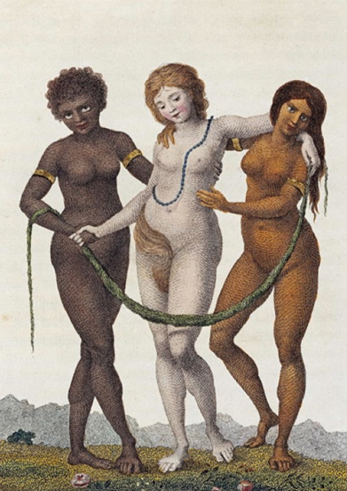
Investigadores como Peter Wade (Música, raza y nación, 2000) han mostrado que el discurso del mestizaje no describe una realidad, sino que la ordena. Estas son las principales objeciones:
Researchers such as Peter Wade (Music, Race and Nation, 2000) have shown that the discourse of mestizaje does not describe a reality, but orders it. These are the main objections:
Forscher wie Peter Wade (Music, Race and Nation, 2000) haben gezeigt, dass der Mestizaje-Diskurs keine Wirklichkeit beschreibt, sondern sie ordnet. Dies sind die wichtigsten Einwände:
Presenta como un encuentro armónico lo que fue un proceso marcado por la conquista, la esclavitud y el despojo. La «mezcla» borra las relaciones de poder entre quienes se mezclaron.It presents as a harmonious encounter what was a process marked by conquest, slavery and dispossession. The “mixture” erases the power relations between those who mixed.Sie stellt als harmonische Begegnung dar, was ein von Eroberung, Sklaverei und Enteignung geprägter Prozess war. Die „Mischung“ löscht die Machtverhältnisse zwischen den Beteiligten aus.
En la práctica, el mestizaje nacional celebró lo negro y lo indígena como «ingredientes» del pasado, mientras el ideal de progreso seguía siendo blanco y urbano. La cumbia fue aceptada en el interior cuando llegó orquestada y «pulida».In practice, national mestizaje celebrated Black and Indigenous heritage as “ingredients” of the past, while the ideal of progress remained white and urban. Cumbia was accepted in the interior once it arrived orchestrated and “polished”.In der Praxis feierte der nationale Mestizaje das Schwarze und das Indigene als „Zutaten“ der Vergangenheit, während das Fortschrittsideal weiß und städtisch blieb. Im Landesinneren wurde die Cumbia akzeptiert, als sie orchestriert und „geschliffen“ ankam.
Asigna a cada grupo un aporte fijo —los tambores, las flautas, el vestido— como si las culturas fueran bloques puros y separados. Así reproduce los mismos estereotipos raciales que dice superar.It assigns each group a fixed contribution —the drums, the flutes, the dress— as if cultures were pure, separate blocks. In doing so it reproduces the very racial stereotypes it claims to overcome.Sie weist jeder Gruppe einen festen Beitrag zu – die Trommeln, die Flöten, die Kleidung –, als wären Kulturen reine, getrennte Blöcke. So reproduziert sie genau die rassischen Stereotype, die sie zu überwinden vorgibt.
Al hablar de una sola nación mestiza, invisibiliza a las comunidades que no se reconocen en esa mezcla, y otras influencias —antillanas, árabes, gitanas— que también pasaron por el Caribe.By speaking of a single mestizo nation, it makes invisible the communities that do not recognise themselves in that mixture, and other influences —Antillean, Arab, Romani— that also passed through the Caribbean.Indem sie von einer einzigen Mestizo-Nation spricht, macht sie Gemeinschaften unsichtbar, die sich in dieser Mischung nicht wiedererkennen, sowie andere Einflüsse – antillanische, arabische, Roma –, die ebenfalls durch die Karibik zogen.
«That is what accompanied us and what will accompany us for the rest of the years, which is part of the natural folklore of the carnival.»
«Es lo que nos acompañó y lo que nos acompañará el resto de los años, que hace parte del folclor natural del carnaval.»„Das ist es, was uns begleitet hat und was uns für den Rest der Jahre begleiten wird, was Teil der natürlichen Folklore des Karnevals ist.“
Geohrge Pinilla AcevedoSobre la música de millo en La Puntica No Ma’On millo music in La Puntica No Ma’Über die Millo-Musik in La Puntica No Ma’EntrevistaInterviewInterview2023 · Aquite Pena 2024La cumbia y el Carnaval de Barranquilla crecieron juntos. La música costeña le dio a la fiesta su sonido, sus danzas y sus desfiles; la fiesta le dio a la cumbia un escenario masivo, una vitrina mediática y, con el tiempo, un sello de patrimonio. En ese ir y venir, el carnaval llegó a percibirse como la fiesta más importante y representativa de Colombia, y la cumbia, como su ritmo emblemático.
Cumbia and the Barranquilla Carnival grew up together. Coastal music gave the festival its sound, its dances and its parades; the festival gave cumbia a mass stage, a media showcase and, in time, a heritage seal. Through this back and forth, the carnival came to be seen as Colombia’s most important and representative festival, and cumbia as its emblematic rhythm.
Die Cumbia und der Karneval von Barranquilla sind gemeinsam gewachsen. Die Musik der Küste gab dem Fest seinen Klang, seine Tänze und Umzüge; das Fest gab der Cumbia eine Massenbühne, ein mediales Schaufenster und mit der Zeit ein Erbe-Siegel. In diesem Hin und Her wurde der Karneval zum wichtigsten und repräsentativsten Fest Kolumbiens, und die Cumbia zu seinem emblematischen Rhythmus.
Los tres imaginarios no se quedan en los libros ni en los discos: también salen a la calle. Este apartado muestra dónde aparece cada uno durante el carnaval —en las danzas, en los desfiles, en los ritos— y cómo los vive una comparsa concreta.
The three imaginaries do not stay in books and records: they also take to the streets. This section shows where each one appears during the carnival —in the dances, the parades, the rites— and how a specific comparsa lives them.
Die drei Vorstellungen bleiben nicht in Büchern und auf Platten: Sie gehen auch auf die Straße. Dieser Abschnitt zeigt, wo jede von ihnen im Karneval auftaucht – in den Tänzen, den Umzügen, den Riten – und wie eine bestimmte Comparsa sie lebt.
Esa comparsa es La Puntica No Ma’, una comparsa de disfraz colectivo: un grupo cuya identidad está en los disfraces y en su elaboración, más que en una coreografía fija. Cada año trabaja un tema distinto y se define como «un performance colectivo, un espacio de encuentro dentro del Carnaval de Barranquilla».
That comparsa is La Puntica No Ma’, a collective costume comparsa: a group whose identity lies in its costumes and their making rather than in a fixed choreography. Each year it works on a different theme and defines itself as “a collective performance, a meeting space within the Barranquilla Carnival”.
Diese Comparsa ist La Puntica No Ma’, eine Comparsa de disfraz colectivo: eine Gruppe, deren Identität in den Kostümen und ihrer Herstellung liegt, nicht in einer festen Choreografie. Jedes Jahr arbeitet sie zu einem anderen Thema und versteht sich als „eine kollektive Performance, ein Ort der Begegnung im Karneval von Barranquilla“.
¿Por qué tomarla como ejemplo? Porque no tiene un ritmo obligado: a diferencia de una cumbiamba o de una danza de congo, nada le impone qué música llevar. Lo que suena en ella es lo que sus integrantes eligen escuchar y bailar, y ahí la cumbia de Chorrera es su «estandarte musical», junto a la champeta. Por eso es un buen lugar para observar cómo los imaginarios de la cumbia se viven en el Carnaval de Barranquilla, no solo cómo se cuentan.
Why take it as an example? Because it has no prescribed rhythm: unlike a cumbiamba or a congo dance, nothing dictates what music it must carry. What it plays is what its members choose to listen and dance to, and there cumbia de Chorrera is its “musical standard”, alongside champeta. That makes it a good place to observe how the imaginaries of cumbia are lived in the Barranquilla Carnival, not only how they are told.
Warum gerade sie als Beispiel? Weil sie keinen vorgeschriebenen Rhythmus hat: Anders als bei einer Cumbiamba oder einem Congo-Tanz schreibt ihr nichts vor, welche Musik sie mitführt. Was bei ihr erklingt, wählen ihre Mitglieder selbst zum Hören und Tanzen, und dabei ist die Cumbia de Chorrera neben der Champeta ihr „musikalisches Banner“. Deshalb eignet sie sich gut, um zu beobachten, wie die Vorstellungen der Cumbia im Karneval von Barranquilla gelebt und nicht nur erzählt werden.
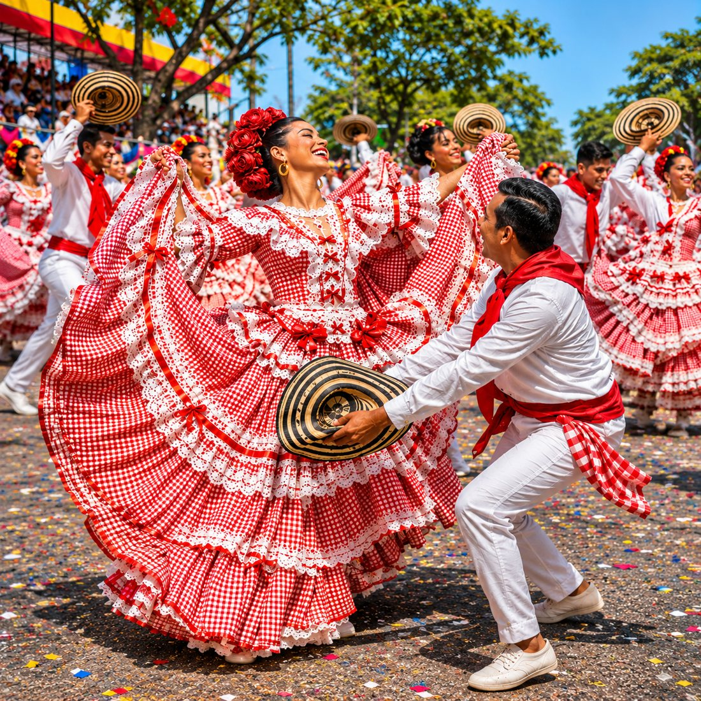
En el carnaval, la cumbia se presenta como la raíz: lo antiguo, lo auténtico, lo que viene «de antes». Las cumbiambas desfilan como guardianas de una tradición que se imagina anterior a la propia fiesta.
In the carnival, cumbia appears as the root: the old, the authentic, what comes “from before”. The cumbiambas parade as guardians of a tradition imagined as older than the festival itself.
Im Karneval erscheint die Cumbia als Wurzel: das Alte, das Authentische, das, was „von früher“ kommt. Die Cumbiambas ziehen als Hüterinnen einer Tradition, die man sich älter als das Fest selbst vorstellt.
La comparsa La Puntica No Ma’ se mueve entre dos músicas: la cumbia y la champeta. Pero cuando se trata de abrir y cerrar el ciclo festivo, la elección recae en la cumbia. En El Llamado, el encuentro en que la comparsa convoca a sus integrantes antes del primer gran evento del carnaval, es la cumbia la que recibe a todos. Y el martes de carnaval, en el entierro de Joselito, un conjunto de millo, presencia única en este rito, acompaña el duelo burlesco con que la ciudad despide la fiesta.
Así, la cumbia marca el principio y el final: funciona como sonido de origen, el que convoca y el que despide. La tradición imaginada de la música y la del rito se sostienen la una a la otra.
The comparsa La Puntica No Ma’ moves between two musics: cumbia and champeta. But when it comes to opening and closing the festive cycle, the choice falls on cumbia. At El Llamado, the gathering where the comparsa summons its members before the carnival’s first major event, it is cumbia that welcomes everyone. And on Carnival Tuesday, at the burial of Joselito, a millo ensemble, a unique presence in this rite, accompanies the mock mourning with which the city bids the festival farewell.
Cumbia thus marks the beginning and the end: it works as the sound of origin, the one that summons and the one that sends off. The imagined tradition of the music and that of the rite hold each other up.
Die Comparsa La Puntica No Ma’ bewegt sich zwischen zwei Musiken: Cumbia und Champeta. Doch wenn es darum geht, den Festzyklus zu eröffnen und zu schließen, fällt die Wahl auf die Cumbia. Beim El Llamado, dem Treffen, zu dem die Comparsa ihre Mitglieder vor dem ersten großen Karnevalsereignis ruft, ist es die Cumbia, die alle empfängt. Und am Karnevalsdienstag, beim Begräbnis von Joselito, begleitet ein Millo-Ensemble, eine einzigartige Präsenz in diesem Ritus, die spöttische Trauer, mit der die Stadt das Fest verabschiedet.
So markiert die Cumbia Anfang und Ende: Sie wirkt als Klang des Ursprungs, der ruft und der verabschiedet. Die vorgestellte Tradition der Musik und die des Ritus stützen sich gegenseitig.
Aquite Pena 2024, «Between millo and picó», §5.1
El carnaval reúne en un mismo desfile a los ritmos que se piensan como hijos de la cumbia. Cada danza trae su toque, y juntos forman la familia que el segundo imaginario describe.
The carnival gathers in a single parade the rhythms thought of as cumbia’s children. Each dance brings its own beat, and together they form the family the second imaginary describes.
Der Karneval vereint in einem Umzug die Rhythmen, die als Kinder der Cumbia gelten. Jeder Tanz bringt seinen eigenen Schlag mit, gemeinsam bilden sie die Familie, die die zweite Vorstellung beschreibt.
Para los integrantes de la comparsa, la cumbia es «la madre»: de ella vendrían el bullerengue, el mapalé y los demás aires que suenan en el desfile. Geohrge Pinilla, capitán de La Puntica en 2013, lo resume así: «la cumbia, obviamente la madre cumbia, es la clave de nuestro carnaval».
La comparsa lleva esa idea más allá con su lema «tradición en evolución». Sobre la base de la cumbia de Chorrera ensaya mezclas con funk y música electrónica, y suma la champeta, como si cada nuevo sonido fuera otro hijo de la misma madre.
For the comparsa’s members, cumbia is “the mother”: bullerengue, mapalé and the other rhythms heard in the parade would all come from it. Geohrge Pinilla, captain of La Puntica in 2013, sums it up: “cumbia, obviously mother cumbia, is the key to our carnival”.
The comparsa pushes the idea further with its motto “tradition in evolution”. On the basis of cumbia de Chorrera it tries out mixes with funk and electronic music, and adds champeta, as if each new sound were another child of the same mother.
Für die Mitglieder der Comparsa ist die Cumbia „die Mutter“: Bullerengue, Mapalé und die anderen Rhythmen des Umzugs stammten von ihr ab. Geohrge Pinilla, 2013 Kapitän von La Puntica, fasst es so zusammen: „die Cumbia, natürlich die Mutter Cumbia, ist der Schlüssel zu unserem Karneval“.
Die Comparsa führt diese Idee mit ihrem Motto „Tradition in Evolution“ weiter. Auf der Grundlage der Cumbia de Chorrera erprobt sie Mischungen mit Funk und elektronischer Musik und nimmt die Champeta auf, als wäre jeder neue Klang ein weiteres Kind derselben Mutter.
Aquite Pena 2024, «Between millo and picó», §5.1
El carnaval se presenta como la suma de lo europeo, lo africano y lo indígena, el mismo relato de mezcla que se cuenta sobre la cumbia. Así, fiesta y género se legitiman mutuamente como retratos de la nación mestiza.
The carnival presents itself as the sum of the European, the African and the Indigenous, the same story of mixture told about cumbia. Festival and genre thus legitimise each other as portraits of the mestizo nation.
Der Karneval präsentiert sich als Summe des Europäischen, Afrikanischen und Indigenen, dieselbe Mischungserzählung wie bei der Cumbia. So legitimieren sich Fest und Gattung gegenseitig als Abbilder der Mestizen-Nation.
En La Puntica, la cumbia y el millo se describen como «raizal». La palabra no se refiere aquí a los habitantes de San Andrés y Providencia, como suele entenderse en Colombia, sino a «algo que tiene distintas raíces u orígenes»: lo africano, lo europeo y lo indígena.
El propio conjunto de millo se lee de esa manera: tambores de acento negro, la flauta de millo de origen indígena, el canto y el vestido de herencia hispánica. Es el relato de Delia Zapata hecho comparsa.
In La Puntica, cumbia and millo are described as “raizal”. Here the word does not refer to the people of San Andrés and Providencia, as it is usually understood in Colombia, but to “something that has different roots or origins”: the African, the European and the Indigenous.
The millo ensemble itself is read this way: drums with a black accent, the millo flute of Indigenous origin, singing and dress of Hispanic heritage. It is Delia Zapata’s narrative turned into a comparsa.
In La Puntica werden Cumbia und Millo als „raizal“ bezeichnet. Das Wort meint hier nicht die Bewohner von San Andrés und Providencia, wie es in Kolumbien meist verstanden wird, sondern „etwas, das verschiedene Wurzeln oder Ursprünge hat“: das Afrikanische, das Europäische und das Indigene.
Auch das Millo-Ensemble selbst wird so gelesen: Trommeln mit schwarzem Akzent, die Millo-Flöte indigener Herkunft, Gesang und Kleidung hispanischen Erbes. Es ist Delia Zapatas Erzählung als Comparsa.
Aquite Pena 2024, «Between millo and picó», §5.1
«Everywhere in the world there are fishermen, everywhere there are sky and stars: music is universal.»
«En todas partes del mundo hay pescadores, en todos hay cielo y estrellas, la música es universal.»„Überall auf der Welt gibt es Fischer, überall gibt es Himmel und Sterne: Musik ist universell.“
Totó la MomposinaCantadora (1940–2026)Singer (1940–2026)Sängerin (1940–2026)EntrevistaInterviewInterviewRevista Diners, 2016Los tres imaginarios no son solo ideas del pasado: siguen alimentando la música que se hace hoy. Tres ejemplos recientes muestran cómo cada uno se retoma, se celebra o se pone en duda.
The three imaginaries are not just ideas from the past: they still feed the music being made today. Three recent examples show how each one is taken up, celebrated or called into question.
Die drei Vorstellungen sind keine bloßen Ideen der Vergangenheit: Sie nähren noch immer die Musik von heute. Drei aktuelle Beispiele zeigen, wie jede von ihnen aufgegriffen, gefeiert oder infrage gestellt wird.
La agrupación de Medellín, dirigida por Juancho Valencia, retoma el clásico que el barranquillero Mario Gareña grabó en 1969 y lo vuelve a vestir con uno de los formatos del pasado. Es un homenaje a esos orígenes que el primer imaginario sitúa al comienzo de la línea: la cumbia que se nombra a sí misma y canta su lugar de nacimiento. El álbum del mismo nombre ganó el Latin Grammy a Mejor Álbum de Cumbia en 2019.
The Medellín group led by Juancho Valencia takes up the classic that Barranquilla-born Mario Gareña recorded in 1969 and dresses it again in one of the formats of the past. It is a tribute to the origins that the first imaginary places at the start of the line: cumbia naming itself and singing about its birthplace. The album of the same name won the 2019 Latin Grammy for Best Cumbia Album.
Die Gruppe aus Medellín unter der Leitung von Juancho Valencia greift den Klassiker auf, den der aus Barranquilla stammende Mario Gareña 1969 aufnahm, und kleidet ihn erneut in eine der Besetzungen der Vergangenheit. Es ist eine Hommage an jene Ursprünge, die die erste Vorstellung an den Anfang der Linie setzt: eine Cumbia, die sich selbst benennt und ihren Geburtsort besingt. Das gleichnamige Album gewann 2019 den Latin Grammy für das beste Cumbia-Album.
Si la cumbia es madre de ritmos, sus descendientes también nacen lejos del Caribe colombiano. El dúo limeño Alejandro y María Laura, llegado desde el pop independiente, se acerca a la chicha y a la cumbia psicodélica del Perú en «Algo tiene que estar mal». María Laura la escribió en 2019, en medio de la ola de estallidos sociales que recorrió América Latina —Ecuador, Chile, Colombia— y que en noviembre de 2020 llegó a las calles del Perú.
If cumbia is the mother of rhythms, its descendants are also born far from the Colombian Caribbean. The Lima duo Alejandro y María Laura, coming from independent pop, approach Peru’s chicha and psychedelic cumbia in “Algo tiene que estar mal” (“Something must be wrong”). María Laura wrote it in 2019, amid the wave of social uprisings that swept Latin America —Ecuador, Chile, Colombia— and reached the streets of Peru in November 2020.
Wenn die Cumbia die Mutter der Rhythmen ist, werden ihre Nachfahren auch fern der kolumbianischen Karibik geboren. Das Duo Alejandro y María Laura aus Lima, das aus dem Indie-Pop kommt, nähert sich in „Algo tiene que estar mal“ („Etwas muss falsch sein“) der Chicha und der psychedelischen Cumbia Perus. María Laura schrieb das Lied 2019, inmitten der Welle sozialer Aufstände, die Lateinamerika erfasste – Ecuador, Chile, Kolumbien – und im November 2020 die Straßen Perus erreichte.
La canción habla de la rutina, las deudas y la desigualdad, y repite una idea sencilla: algo tiene que cambiar. Se publicó en octubre de 2021 con un video de David Carrasco que monta imágenes de las movilizaciones peruanas sobre ese ritmo de chicha: la cumbia como banda sonora de la protesta.
The song speaks of routine, debt and inequality, and repeats a simple idea: something has to change. It was released in October 2021 with a video by David Carrasco that sets footage of the Peruvian mobilisations to that chicha beat: cumbia as the soundtrack of protest.
Das Lied handelt von Routine, Schulden und Ungleichheit und wiederholt eine einfache Idee: Etwas muss sich ändern. Es erschien im Oktober 2021 mit einem Video von David Carrasco, das Bilder der peruanischen Mobilisierungen mit diesem Chicha-Rhythmus unterlegt: Cumbia als Soundtrack des Protests.
La artista barranquillera radicada en Toronto, ganadora del Polaris Prize, grabó el video de esta canción —mezcla de cumbia y R&B— en San Basilio de Palenque, el primer pueblo libre de africanos en la América colonial, junto al grupo de tambores KUMBE. Aquí las «tres raíces» no aparecen como una mezcla armónica ya resuelta, sino como una pregunta abierta: ¿quién canta hoy la cumbia, desde qué cuerpo y desde qué territorio?
The Barranquilla-born, Toronto-based artist and Polaris Prize winner shot the video for this song —a blend of cumbia and R&B— in San Basilio de Palenque, the first free African town in the colonial Americas, with the drum group KUMBE. Here the “three roots” do not appear as a harmonious mix already settled, but as an open question: who sings cumbia today, from which body and from which territory?
Die in Barranquilla geborene, in Toronto lebende Künstlerin und Polaris-Preisträgerin drehte das Video zu diesem Lied – einer Mischung aus Cumbia und R&B – in San Basilio de Palenque, dem ersten freien afrikanischen Dorf im kolonialen Amerika, gemeinsam mit der Trommelgruppe KUMBE. Hier erscheinen die „drei Wurzeln“ nicht als bereits gelöste harmonische Mischung, sondern als offene Frage: Wer singt heute Cumbia, aus welchem Körper und aus welchem Gebiet?
Una selección para recorrer los formatos y territorios del especial: de las gaitas al continente.A selection to travel through the formats and territories of this special: from the gaitas to the continent.Eine Auswahl, um die Formate und Gebiete dieses Spezials zu durchlaufen: von den Gaitas bis zum Kontinent.
Basado en la tesis de maestría Between millo and picó (Etnomusicología, Universität Würzburg, 2024) y en el artículo La música del Carnaval de Barranquilla: patrimonio vivo. Oscar Aquite es músico, productor de audio y magíster en Estudios sobre Desarrollo; cursa el Master of Arts in Digital Humanities en la Universität Regensburg y es el fundador de Carnavarium.
Based on the master’s thesis Between millo and picó (Ethnomusicology, Universität Würzburg, 2024) and the article The Music of the Barranquilla Carnival: A Living Heritage. Oscar Aquite is a musician and audio producer with a master’s degree in Development Studies; he is studying for the Master of Arts in Digital Humanities at the Universität Regensburg and is the founder of Carnavarium.
Nach der Masterarbeit Between millo and picó (Ethnomusikologie, Universität Würzburg, 2024) und dem Artikel Die Musik des Karnevals von Barranquilla: lebendiges Erbe. Oscar Aquite ist Musiker, Audioproduzent und Master in Entwicklungsstudien; er studiert im Master of Arts Digital Humanities an der Universität Regensburg und ist Gründer von Carnavarium.
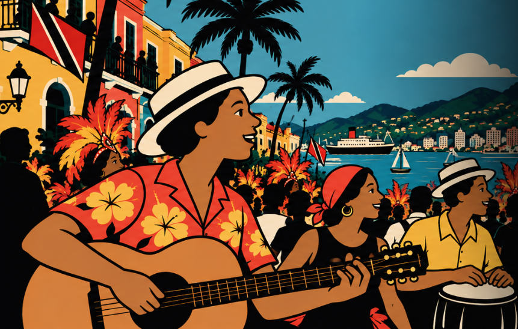
Otro especialAnother specialWeiteres SpezialRuta del calipsoThe Calypso RouteDie Route des CalypsoHistoria, rasgos musicales y referentes del calipso, y su aporte al imaginario caribeño.History, musical traits and key figures of calypso, and its contribution to the Caribbean imaginary.Geschichte, musikalische Merkmale und Bezugsgrößen des Calypso und sein Beitrag zum karibischen Imaginären.→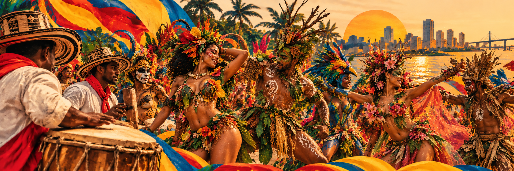
Tesis de maestríaMaster’s thesisMasterarbeitBetween millo and picóLa investigación en la que se basa este especial: música y autenticidad en la comparsa La Puntica No Ma’ del Carnaval de Barranquilla.The research this special is based on: music and authenticity in the La Puntica No Ma’ comparsa of the Barranquilla Carnival.Die Forschung, auf der dieses Spezial beruht: Musik und Authentizität in der Comparsa La Puntica No Ma’ des Karnevals von Barranquilla.→